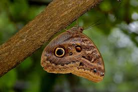
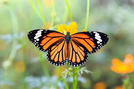
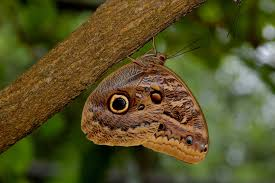
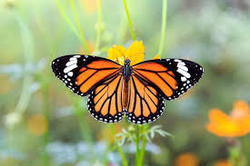
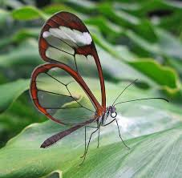
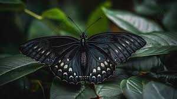
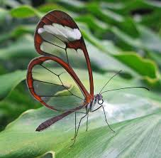
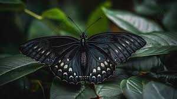

Como se Classificam?

Borboletas são animais pertencentes à Ordem Lepidoptera, divididas em seis famílias: Hesperiidae, Papilionidae, Pieridae, Nymphalidae, Riodinidae e Lycaenidae.Com isso podemos ver que existem diferentes tipos de borboletas, dentro dessas classificações também existem mais famílias,mas agora vou falar um pouco de caracte´ristica de cada uma. Hesperiidae:Tem geralmente corpos mais robustos, olhos compostos maiores e músculos das asas mais fortes do que os outros dois grupos, parecendo assim mais semelhantes com as "traças" do que com as outras linhagens de borboletas. Papilionidae:São borboletas com vôo ágil e poderoso, mas nem sempre rápido. São abundantes em ambientes úmidos, com grande abundância de árvores nativas e diversidade de microhábitats. Pieridae:Os membros desta família possuem nervura radial nas asas anteriores, com 3 ou 4 ramificações, raramente 5. As patas anteriores são bem desenvolvidas em ambos os sexos, ao contrário dos membros da família Nymphalidae e as garrs são bífidas, ao contrário dos membros da família Papilionidae. Nymphalidae:É formada por borboletas geralmente de tamanho pequeno. Muitas espécies desta subfamília apresentam coloração disruptiva e críptica, e poucas com coloração de advertência. Algumas espécies apresentam as asas posteriores terminadas em cauda. Riodinidae:É uma família de Lepidoptera cujas espécies têm distribuição mundial, sendo que a grande maioria é encontrada apenas na região Neotropical. No Brasil, estão catalogadas 761 espécies com populações pequenas e localizadas. Lycaenidae:São borboletas de tamanho pequeno, coloridas, às vezes se destaca o tom metálico. Possui grande riqueza de espécies, com cerca de 6.000 e distribuição mundial. No Brasil, são conhecidas aproximadamente 420 espécies.
Comportamento

Seus hábitos são crepusculares: permanecem pousadas em troncos durante o dia e voam de manhã ou nas últimas horas do dia, antes do anoitecer. No período em que é adulta, a borboleta usa muitas partes do corpo para encontrar comida: as antenas percebem cheiros; a parte de baixo das seis pernas possuem receptores que captam informação sobre o sabor dos alimentos; a língua lembra uma tromba enrolada e estica para sugar, por exemplo, o néctar das plantas.Esses animais sentem os sabores por meio de receptores que ficam na parte de baixo das pernas. Ao pousar em uma flor, eles já experimentam seu néctar. Com essa habilidade, também conseguem saber qual local é seguro pousar, se alimentar e reproduzir.Quando pousam em alguém é para sugar suor, lágrimas e sangue, muitas pessoas tem a crença de que quando alguma borboleta pouse em você,é porque algum familiar ou conhecido já falecido quer fazer contato de dizer que está tudo bem..
Corpo

Chamamos de borboleta o animal que já está na fase adulta da vida — antes disso, ela já foi ovo, lagarta e viveu em um casulo. Quando se torna uma borboleta, o inseto voa entre flores, alimentando-se principalmente do néctar delas, e se reproduz. As asas são cobertas por minúsculas escamas, que criam efeitos visuais de cores e estampas. O colorido serve de alerta, mostrando que a borboleta é venenosa para alguns predadores, ou pode ajudar na camuflagem do animal. Outra utilidade das escamas: absorvem e refletem a luz solar, controlando a temperatura do corpo do animal.. As borboletas possuem seis patas, três de cada lado, e dois pares de asas. Elas têm milhares de pequenos olhos, que oferecem uma supervisão — esses animais enxergam até raios ultravioletas, invisíveis para os seres humanos.
Onde São Encontradas

Borboletas são encontradas em todo o mundo e em todos os tipos de ambientes: quentes e frios, secos e úmidos, ao nível do mar e no alto das montanhas. A maioria das espécies são encontradas em regiões tropicais, especialmente nas florestas. A migração desses insetos não é bem compreendida. A maioria migra distâncias relativamente curtas. Algumas espécies como as monarcas migram milhares de quilômetros. Existem cerca de 28.000 diferentes espécies de borboletas no mundo.Elas só podem voar a partir de uma certa temperatura corporal. Para isso se aquecem ao sol. Quando vão envelhecendo, a cor das asas desaparece. Quando lagartas, passam a maior parte do seu tempo comendo folhas. A primeira refeição da lagarta, no entanto, é a sua própria casca.

 




 


